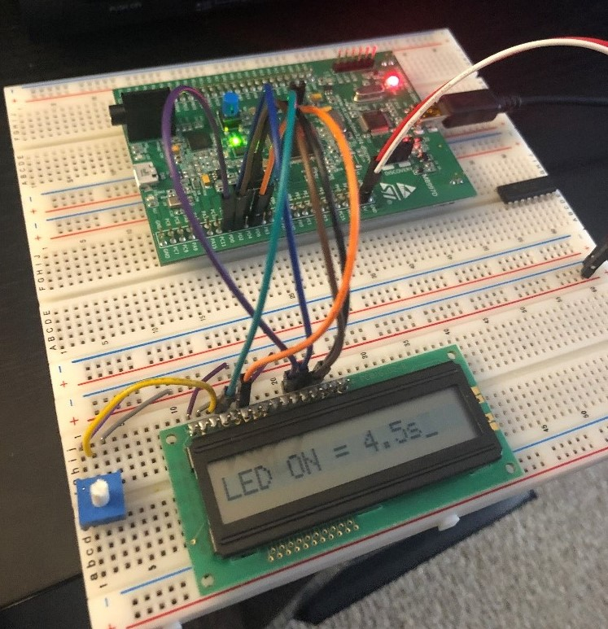
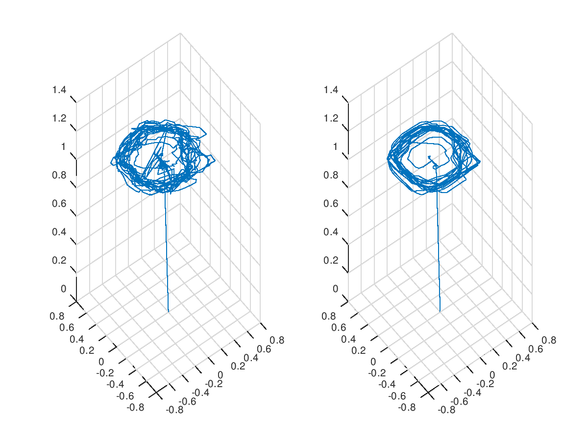

Microprocessor LCD Display

This project is from my Microprocessor Architecture class. We used a microprocessor to initialize an LCD display. Once the display was initialized, we were able to print to the display using a series of functions. In this case, we were displaying the period of a flashing LED.
Data Smoothing Research

This snapshot is from the research I have done with the university. Part of the research project required gathering data from a stationary bicycle's pedals. Because the data was noisy, we needed to run an algorithm on it to smooth it before we could extract information from it.